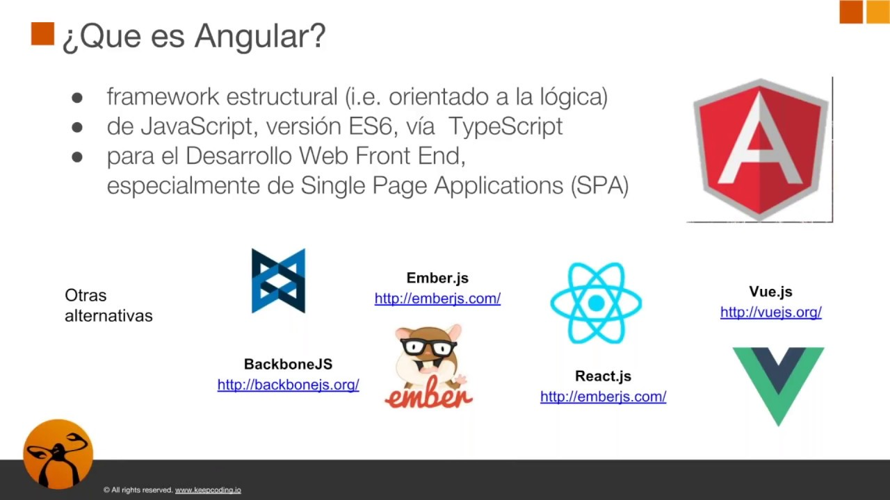
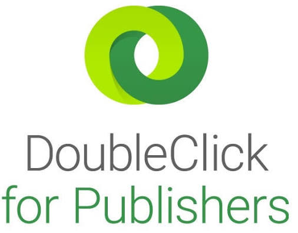

HISTORIA DE ANGULARJS

ORIGEN: AngularJS nació en 2009 de la idea de Miško Hevery, ingeniero de Google, y de Adam Abrons. Hevery quería una forma más simple de crear aplicaciones web: en un proyecto interno reescribió una aplicación de unas 17.000 líneas de código en solo 1.500.
Primera versión pública (20-10-2010): Se publicó la versión 0.9.0 como proyecto de código abierto. El nombre Angular viene de los símbolos < > del HTML, porque la propuesta era ampliar el vocabulario del HTML con atributos nuevos.
AngularJS 1.0 (14-06-2012): Miško Hevery anunció en el blog de Google la versión 1.0, con un lenguaje de plantillas basado en HTML y data binding de dos vías. Desde entonces se convirtió en uno de los frameworks más usados para aplicaciones de una sola página.
De AngularJS a Angular (14-09-2016): Se publicó Angular 2.0.0, una reescritura completa e incompatible con la versión anterior. Desde entonces, AngularJS es la versión 1.x y Angular es la versión 2 en adelante.
Fin del soporte (31-12-2021): En 2018 se anunció el retiro gradual: el desarrollo activo terminó el 30 de junio de 2018 y la versión 1.7 pasó a soporte a largo plazo. Ese soporte se extendió seis meses por la pandemia y terminó el 31 de diciembre de 2021. La última versión estable, la 1.8.3, se publicó el 7 de abril de 2022.
COMO SE INSTALA ANGULARJS
AngularJS es una librería de JavaScript, así que no necesita un instalador: basta con cargar un archivo en tu página HTML.
Opción 1: CDN de Google. Es la más rápida. Agrega esta línea antes de cerrar la etiqueta body:
<script src="https://ajax.googleapis.com/ajax/libs/angularjs/1.8.3/angular.min.js"></script>Opción 2: descargar el archivo. Descarga angular.min.js desde angularjs.org, guárdalo en una carpeta de tu proyecto y enlázalo:
<script src="js/angular.min.js"></script>Opción 3: npm. Si tienes Node.js, ejecuta este comando en la carpeta de tu proyecto y enlaza el archivo de node_modules:
npm install angular
<script src="node_modules/angular/angular.min.js"></script>Tu primera aplicación. Marca con ng-app la parte de la página que AngularJS debe controlar y usa ng-model para enlazar un campo con una variable. Escribe en el campo para probarlo:
Hola {{ nombre }}
<div ng-app="">
<input type="text" ng-model="nombre">
<p>Hola {{ nombre }}</p>
</div>EJEMPLOS DE APLICACIONES
AngularJS se usa en aplicaciones de una sola página, paneles de control, formularios y sitios con datos que cambian. Estos son tres ejemplos citados en artículos sobre AngularJS:
1. YouTube para PlayStation 3
La versión de YouTube para la consola PlayStation 3 se cita como una aplicación construida con AngularJS. Muestra que el framework sirve para interfaces de pantalla completa con mucho contenido que cambia, como listas de videos y menús.
2. Weather.com
El sitio de pronósticos del clima se menciona como ejemplo de AngularJS. Es un caso típico: datos que cambian constantemente, como temperaturas y alertas, que el data binding muestra al instante en la página.

3. Google DoubleClick for Publishers
La plataforma de Google para gestionar publicidad se nombra como uno de los proyectos grandes donde se usó AngularJS. Es un panel de trabajo con muchas tablas y formularios, el tipo de aplicación para la que AngularJS fue pensado.